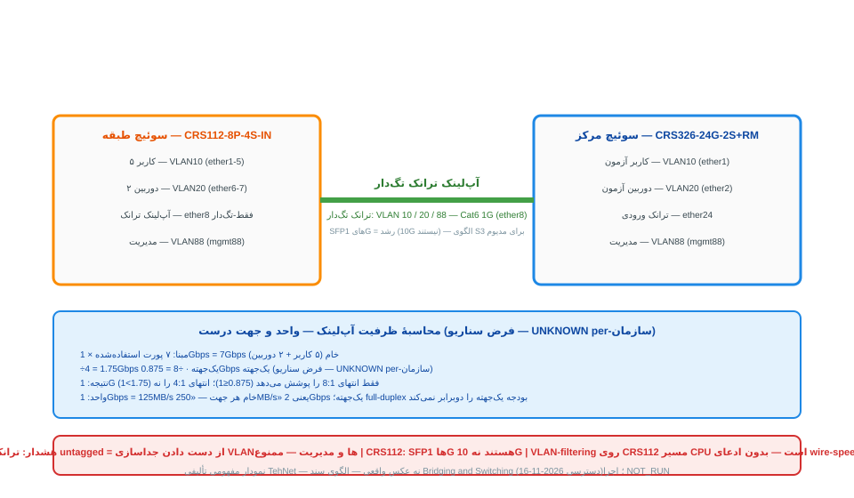

وضعیت درس: DRAFT / NOT_DEPLOYED — در انتظار مرور.
آموزش تصویری از سری switching؛ مخاطب: کارشناس شبکه.
سناریوی کاملاً فرضی و آموزشی با دادهٔ ساختگی؛ هیچ شبکهٔ واقعی دستکاری نشده و هیچ اجرای واقعی NOT_RUN است.
نمودار مفهومی و تألیفی است (نه عکس واقعی).
آپلینک بین دو سوئیچ باید: (۱) ترانک تگدار برای همهٔ VLANهای لازم (نه untagged تکVLAN)، (۲) ظرفیت کافی برای جمع ترافیک پاییندست (سقف آپلینک = سقف تجمعی همهٔ کاربران آن سوئیچ) و (۳) قابلشناسایی — پورت آپلینک با frame-types تگدار و ردیف جدول VLAN مشخص. سه اشتباه مرگبار آپلینک: untagged گذاشتن ترانک، جا انداختن یک VLAN از ردیف جدول VLAN، و آپلینکگیربیمحاسبه (هشت پورت 1G پشت یک آپلینک 100M).
| بند | مقدار فرضی |
|---|---|
| سوئیچ طبقه | CRS112-8P-4S-IN — ۸ کاربر دفتر (VLAN10) + ۴ دوربین (VLAN20) |
| سوئیچ مرکز | CRS326-24G-2S+RM — هستهٔ شبکه |
| آپلینک | SFP+ 1m DAC (فاصلهٔ رکبهرک — الگوی S3) یا کابل Cat6 1G |
| VLANهای عبوری از ترانک | 10 (دفتر) + 20 (دوربین) + 88 (مدیریت — مبناى M3) |
| ظرفیت پاییندست | ۱۲ پورت 1G (۱۲ کاربر بالقوه) → جمع تئوریک 12Gbps |
| اجرای واقعی | NOT_RUN — دستورها الگوی سند Bridging and Switching |
سقف تئوریک پاییندست: ۱۲ پورت × 1Gbps = 12Gbps
مصرف واقعبینانه: هر کاربر بهندرت همزمان خط را پر میکند
ضریب تجمعی رایج: 4:1 تا 8:1 (فرض آموزشی — UNKNOWN per-سازمان)
آپلینک 1G برای: جمع واقعی ≤ ~125-250MB/s و رشد کم
آپلینک 10G برای: سرور/NAS/دوربینهای سنگین روی همان سوئیچ
قاعده: آپلینک ≥ بزرگترین ترافیک همزمانِ محتمل + رشد ۲۴ ماهضریب تجمعی یک فرض مهندسی است نه قاعدهٔ ثابت — اندازهگیری واقعی (مثلاً مانیتور پورت در بازههای شلوغ — الگوی N2) ملاک نهایی است.
# سمت CRS112 (طبقه) — پورت آپلینک: sfp-sfpplus1 با DAC به مرکز
/interface bridge set bridge vlan-filtering=yes hw=yes
/interface bridge vlan
add bridge=bridge vlan-ids=10 tagged=sfp-sfpplus1
add bridge=bridge vlan-ids=20 tagged=sfp-sfpplus1
add bridge=bridge vlan-ids=88 tagged=sfp-sfpplus1
# سمت مرکز (CRS326) — پورت مقابل با همان سه VLAN تگدار
/interface bridge vlan
add bridge=bridge vlan-ids=10,20,88 tagged=sfp-sfpplus1(الگوی سندشدهٔ Bridging and Switching: ترانک = VLANها تگدار روی پورت آپلینک؛ جدول VLAN هر دو طرف باید همهٔ VLANهای عبوری را داشته باشد — جاافتادن یک VLAN در یک طرف = قطع همان VLAN در طرف دیگر.)

شرح متنی نمودار (جایگزین تصویر برای دسترسپذیری): دو سوئیچ: طبقه (CRS112 با ۱۲ پورت کاربر دوربین) و مرکز (CRS326). بین آنها آپلینک با برچسب «ترانک تگدار VLAN 10/20/88». روی آپلینک جعبهٔ محاسبه: سقف پاییندست 12Gbps تئوریک، ضریب تجمعی، آپلینک انتخابی. یک هشدار قرمز: «ترانک untagged = از دست دادن جداسازی». راهنما و برچسب «تألیفی/مفهومی».
| # | تست | انتظار |
|---|---|---|
| ۱ | هر VLAN از هر دو طرف روی پورت آپلینک تگدار ثبت شده؟ | `/interface bridge vlan print` هر دو سوئیچ یکسان |
| ۲ | ترافیک هر VLAN از ترانک عبور میکند؟ | ping بین همان VLAN دو سوئیچ |
| ۳ | جداسازیها حفظ شده؟ | تستهای منفی الگوی M2 از سوئیچ دوم |
| ۴ | ظرفیت آپلینک ≥ جمع محتمل؟ | محاسبهٔ بالا + مانیتور (الگوی N2) |
| نشانه | علت محتمل | بررسی | راهحل |
|---|---|---|---|
| یک VLAN از سوئیچ طبقه کار نمیکند | جا افتادن آن VLAN از ردیف جدول VLAN آپلینک | مقایسهٔ `bridge vlan print` دو طرف | افزودن همان VLAN به ترانک هر دو طرف |
| کل سوئیچ طبقه از دسترس خارج | آپلینک untagged شده (ترانک از دست رفته) | بررسی frame-types پورت آپلینک | برگرداندن tagged |
| کندی جمعی در ساعت شلوغ | oversubscription آپلینک | مانیتور ترافیک آپلینک (الگوی N2) | آپلینک 10G (S3) یا تجمیع bonding (سند رسمی — خارج این درس) |
| لینک بالا ولی ترافیک نمیگذرد | frame-types ناهمسان دو طرف | مقایسهٔ تنظیم پورت آپلینک | همسانسازی |